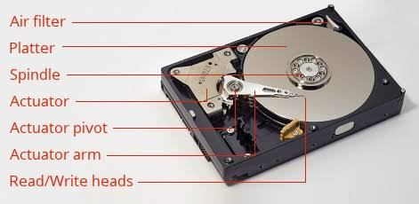
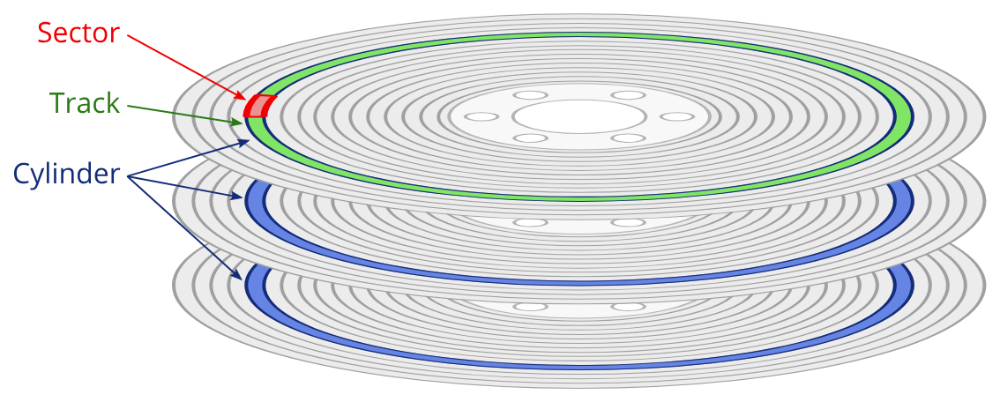
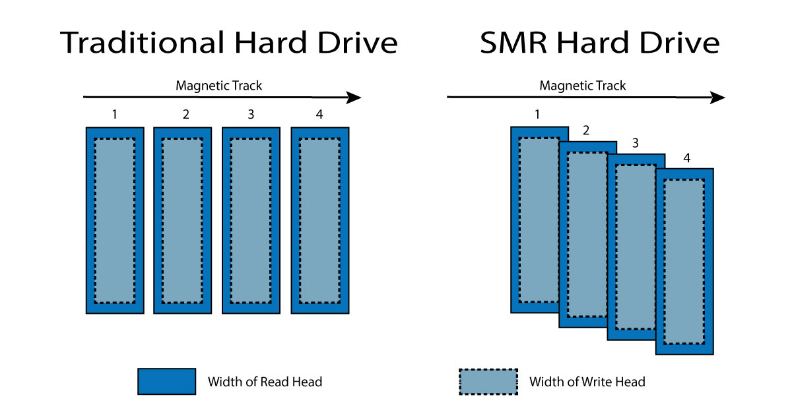

All About Hard Drives
While working on making the Klaud File System persistent for my OS project I had to do some research on hard drives and making their drivers. I originally built an ATA driver, completely forgot that my OS currently boots off a floppy image, and ended up having to pivot to write a Floppy Disk Controller (FDC) driver instead. I thought I'd share what I learned so I don't feel the information is useless.
A hard drive is a physical storage medium used by a computer and retains information even when the computer is off. There are two main types:
- Hard Disk Drives (HDD): Mechanical drives that use rapidly spinning magnetic platters and moving read/write heads to access data.
- Solid State Drives (SSD): Non-mechanical drives that store data using flash memory chips. Since they have no moving parts, SSDs are significantly faster, more durable, and more energy-efficient than HDDs.
In this article we will be discussing HDDs, specifically.
HDD Hardware
Below is a representation of an HDD and its parts:

Platter
The platters are circular disks where data is stored, read, and written from. A typical drive features multiple platters stacked vertically on a central spindle. They are typically made of aluminum, glass, or ceramic substrates coated with a magnetic thin-film layer. Data is stored as 1's and 0's by altering the polarity of the microscopic grains within the magnetic layer. The surface is organized into sectors, tracks, and cylinders. Tracks are circular rings around the platter, sectors are smaller sections of tracks typically in the size of 512 bytes, though modern drives predominantly use Advanced Format (4KB) sectors, and cylinders are a vertical stack of identical tracks across all platters.

Because outer tracks have a much larger circumference than inner tracks, modern drives use Zone Bit Recording (ZBR). Instead of wasting space, ZBR groups tracks into zones. The mechanical spindle motor spins at a fixed speed (Constant Angular Velocity), meaning the outer edge flies past the head much faster than the center. To maximize storage, outer zones contain more sectors and the drive controller dynamically increases the read/write channel clock speed when working on the outer edges to handle the higher data rate.
Spindle
The spindle holds all of the platters in place. A high-precision DC motor spins the spindle and platters at 5400 or 7200 RPM for consumer products and up to 10,000 or 15,000 RPM for enterprise servers.
Actuator & Actuator Arm
The Actuator Arm is the mechanical assembly that swings the read/write heads across the surfaces of the spinning platters. In a multi-platter drive, a stack of arms moves in perfect unison to access both the top and bottom sides of every platter surface.
The arm is driven by a Voice Coil Motor (VCM). Utilizing a permanent magnet and a copper wire coil, the VCM uses Lorentz force (the same physics that drive an audio loudspeaker) to swing the arm with incredible speed.
Because modern data tracks are impossibly narrow, drives often pair the VCM with a Dual-Stage Actuator (DSA). The DSA adds a microscopic piezoelectric (something that generates electric charge) element right at the suspension tip of the arm, providing an ultra-fine secondary adjustment. To keep the head locked on target, the drive relies on a continuous stream of Position Error Signals (PES), which are specialized magnetic marks pre-written onto the platter that instantly tell the controller if the head is drifting off-center.
Read and Write Heads
The read and write heads are located at the very tip of the actuator arm. They never actually touch the platter surface; doing so would damage the disk. Instead, the rapid rotation of the platter creates a microscopic cushion of air, allowing the heads to fly 3 to 6 nanometers above the surface.
Modern drives split reading and writing into completely distinct physical components on the head:
- GMR Sensors: Consists of two ferromagnetic layers separated by a thin, conductive, non-magnetic copper spacer. The pinned layer has a fixed magnetic orientation, while the free layer rotates freely to align with the platter's magnetic bits. When the layers are parallel, electrons pass through with minimal scattering (low resistance). When anti-parallel, electron scattering spikes (high resistance). This difference in intensity translates directly to binary data.
- TMR Sensors: TMR replaces the conductive copper spacer with an ultra-thin insulating barrier. Instead of traveling through a metal, electrons use quantum tunneling to go through the insulator. TMR provides a massive change in electrical resistance compared to GMR, allowing it to easily read the incredibly weak magnetic fields produced by dense modern platters.
- Thin-Film Write Heads: While TFI technology used to handle both reading and writing back in the day, it is now reserved strictly for writing. A TFI head uses a microscopic copper coil wrapped around a magnetic core. Flooding the coil with electrical current creates a localized magnetic field at the pole tip, flipping the atoms in the platter's grains to point north or south (representing a 1 or a 0).
In the 2000s, engineers were trying to come up with new ways to get more storage in drives. The obvious thought would be to shrink the magnetic grains. But they found out that eventually they hit the "superparamagnetic limit," or when they're too small they became so unstable that they would randomly flip due to heat, causing data loss. Perpendicular Magnetic Recording (PMR) solved this by flipping the magnetic bits to stand vertically (perpendicular to the platter) rather than laying flat. This structural change drastically reduced magnetic interference between adjacent bits and allowed manufacturers to pack data much tighter.
From PMR, two commercial tracking methods branched out:
- CMR (Conventional Magnetic Recording): Writes data onto independent parallel tracks separated by empty guard bands. This allows the drive to instantly overwrite any individual sector without impacting its neighbors. It is the gold standard for high performance in NAS systems and servers.
- SMR (Shingled Magnetic Recording): Because physical write heads are wider than read heads, SMR overlaps data tracks like shingles on a roof to squeeze out extra capacity. The drive leaves behind a tightly packed track perfectly sized for a narrow TMR read head. The downside? If you modify a sector, writing to that track will ruin the data on the overlapping track next to it. The drive has to read an entire zone into a cache and rewrite the whole block, resulting in massive write slowdowns during heavy tasks. SMR is strictly ideal for cheap, cold archival storage.

Controller
The Printed Circuit Board (PCB) bolted to the bottom of the drive is like the control station. When you save a file, the controller calculates the physical coordinates, applies Write Precompensation (shifting the timing of the write pulses by picoseconds to counteract physical bit repulsion on the platter), and drives the VCM current.
When reading, the head detects resistance fluctuations from the platter's magnetic transitions. The logic board takes this messy, overlapping analog waveform and passes it through PRML (Partial-Response Maximum-Likelihood) digital signal processing. PRML uses probability matrices to determine the most likely sequence of binary bits hidden inside the fuzzy analog signal, cleanly converting it back to digital data before sending it down the SATA or SAS bus to your CPU and RAM.
Drive Interfaces
A Hard Drive Interface connects the drive to the computer's motherboard. The main types are:
- NVMe/M.2: Modern standard
- SATA: Common legacy and mainstream interface for internal hard drives and 2.5-inch SSDs
- IDE (ATA, PATA): An obsolete interface using wide ribbon cables
- SAS: Enterprise-grade interfaces built for heavy-duty, continuous server operations
- USB/Thunderbolt: Used for external hard drives
If you are looking to build an OS, you will likely need to make drivers to communicate with these interfaces which can then communicate to the disk once you are in 32 bit protected mode. Before then (real mode) you will be able to use real interrupts (INT 13h) to write and read to disk. I will cover what it takes to make drivers for ATA (or PATA) and go more into depth with SATA.
ATA
A standard PC motherboard can support two ATA channels (Primary and Secondary) each capable of hosting two drives (Master and Slave). What's funny about the names "master" and "slave" drives is that neither of them are above or below each other in either way. They are simply distinct names for 2 drives.
The Primary and Secondary ATA are controlled by ports 0x1F0 through 0x1F7, and 0x170 through 0x177, with control registers at 0x3F6 and 0x376, respectively. In legacy interfaces like FDC relied on an external ISA DMA controller chip while ATA uses PIO which makes the CPU do the heavy lifting. The CPU reads data straight from the hard drive controller's internal buffer, 16 bits at a time.
| Offset from base | Direction | Function | Description | Parameter Size |
|---|
| 0 | R/W | Data Register | Read/Write PIO data bytes | 16-bit/16-bit |
| 1 | R | Error Register | Used to retrieve any error generated by the last ATA command executed. | 8-bit / 16-bit |
| 1 | W | Features Register | Used to control command specific interface features. | 8-bit / 16-bit |
| 2 | R/W | Sector Count Register | Number of sectors to read/write (0 is a special value). | 8-bit / 16-bit |
| 3 | R/W | Sector Number Register (LBA-low) | This is CHS / LBA28 / LBA48 specific. | 8-bit / 16-bit |
| 4 | R/W | Cylinder Low Register / (LBA-mid) | Partial Disk Sector address. | 8-bit / 16-bit |
| 5 | R/W | Cylinder High Register / (LBA-High) | Partial Disk Sector address. | 8-bit / 16-bit |
| 6 | R/W | Drive / Head Register | Used to select a drive and/or head. Supports extra address/flag bits. | 8-bit / 8-bit |
| 7 | R | Status Register | Used to read the current status. | 8-bit / 8-bit |
| 7 | W | Command Register | Used to send ATA commands to the device. | 8-bit / 8-bit |
Logical Block Addressing (LBA): Layer of abstraction to make it easier to identify and access data blocks (sectors) on storage devices. Before, systems used CHS (Cylinder-Head-Sector) addressing which required the software to specify the exact physical track, disk head, and sector. As time went on, HDDs and SSDs have more complex geometries and differing sector sizes. LBA allows for the OS to reference data sequentially (first sector is 0, next is 1, etc) which is so much easier to write. What I am describing is LBA28 (drive-select byte carrying 4 address bits, 0x20 command) and has a limit of $2^{28}=268,435,456$ data sectors (or 128 GB), for larger drives LBA48 exists with a limit of 144 PB.
Reading a sector using LBA:
- Select the Drive: Send a byte specifying whether you want the Master or Slave drive, and set the addressing mode to LBA
- 400ns Delay: It is needed to read the status register four times to give the drive enough time to physically settle itself.
- Set Sector Count: Write the number of sectors you want to read
- Write LBA Coordinates: Send the target LBA address across the LBA-Low, LBA-Mid, and LBA-High ports.
- Identify Device: Finds whether to use LBA28 or LBA48 command variants by reading bit 10 in word 83
- Issue the Read Command: Write the command byte 0x20
- Poll or Wait for Interrupt: Wait for the drive to drop the BUSY bit and set the DRQ (Data Request) bit. In a real OS, you yield the CPU and wait for IRQ 14 (Primary Channel) or IRQ 15 (Secondary Channel)
- Pull the Data: Run a loop using the assembly instruction insw (Input String Word) to read 256 words (512 bytes) out of the data port directly into your OS memory buffer.
SATA
SATA or Serial Advanced Technology Attachment transmits data serially over a single cable where ATA sends information in parallel across multiple lines. But other than that most of the commands are still the same: like 0x20 for Read, 0x30 for Write, or 0xEC for Identify Drive. Another interesting difference is that SATA uses exclusively DMA for data transfers. Part of what makes DMA so amazing is the fact that it can pass data without CPU intervention.
Sources